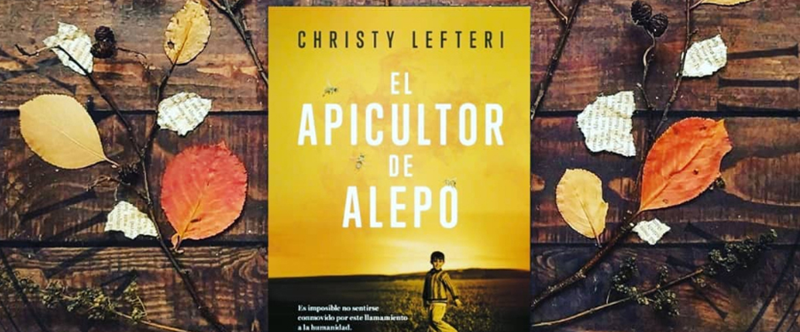

En Alepo, la vida de Nuri y de su esposa, Afra, transcurría feliz junto a su hijo, Sami. Él era apicultor y dedicaba su vida a las abejas, ella era una artista de gran sensibilidad que vendía sus cuadros en el mercado de la ciudad. Pero cuando sucede lo impensable y la guerra destruye todo lo que aman, tienen que escapar. Mientras huyen a Turquía y luego a Grecia, siguiendo la peligrosa estela de tantos otros refugiados sirios, Nuri evoca sus recuerdos más felices para no perder la esperanza en el futuro, uno en el que pueda reencontrarse con el brezo, las abejas y su primo Mustafá, que los espera en Inglaterra.
En su camino encontrará a un caballero con un oscuro pasado y un aún más misterioso presente, a un anciano erudito de insospechados recursos y a un joven alegre y audaz. Una extraña compañía con la que Anna tratará de alcanzar los palacios más secretos de Roma dispuesta a encontrar a su hermano y ejercer su venganza.
“El apicultor de Alepo” es un libro conmovedor que narra la estoica vida de personas que, sobreviviendo a la guerra, superan bloqueos físicos y emocionales inimaginables. La idea de la autora parece ser contar la historia de estas personas, con las que contactó como voluntaria en un centro de apoyo de Unicef en Atenas, como una forma de dignificarlas y contribuir al despertar de las conciencias de todos aquellos que, cómodos en sus vidas, no se dan cuenta de la realidad de los refugiados .
Lefteri expone la delgada línea entre la bondad y la maldad humana, cuando muestra en Alepo la amenaza y el extremismo del conflicto y la supervivencia y, en los campos de refugiados, la pasividad compasiva y la ceguera oportuna y selectiva de las autoridades ante evidencias de exposición y explotación de los más vulnerables.
A través de los recuerdos de Nuri, apicultor, y su esposa Afra, artista, Christy Lefteri permite al lector contactar con dos versiones de Alepo: la ciudad antes y después de la guerra, y la forma en que la gente intenta sobrevivir. Nuri y Afra también retratan la historia de un amor que busca sobrevivir a pérdidas profundas: de un niño, de la tierra, de la identidad, de la esperanza y, en muchos aspectos, de la dignidad.
Complementariamente, a través de la relación con Mustafa, se enfatiza el poder del afecto, una intensa historia de amistad entre dos hombres y entre familias unidas por la historia, por el interés por la apicultura, por el testimonio compartido de un sueño.
Lefteri destaca la vulnerabilidad, la vida y la esperanza, atravesando los túneles del sufrimiento, las formas de contener el dolor, de superar el trauma y para afrontar la realidad que cada uno afronta a su manera.
Conmovedor, poderoso, escrito con enorme belleza y compasión.Contado de forma clara, es el tipo de libro que nos recuerda el poder de las buenas historias.
¿Os gusta leer este tipo de historias? ¿Os llama la atención?
El apicultor de Alepo de Christy Lefteri
Sinopsis
En Alepo, la vida de Nuri y de su esposa, Afra, transcurría feliz junto a su hijo, Sami. Él era apicultor y dedicaba su vida a las abejas, ella era una artista de gran sensibilidad que vendía sus cuadros en el mercado de la ciudad. Pero cuando sucede lo impensable y la guerra destruye todo lo que aman, tienen que escapar. Mientras huyen a Turquía y luego a Grecia, siguiendo la peligrosa estela de tantos otros refugiados sirios, Nuri evoca sus recuerdos más felices para no perder la esperanza en el futuro, uno en el que pueda reencontrarse con el brezo, las abejas y su primo Mustafá, que los espera en Inglaterra.
En su camino encontrará a un caballero con un oscuro pasado y un aún más misterioso presente, a un anciano erudito de insospechados recursos y a un joven alegre y audaz. Una extraña compañía con la que Anna tratará de alcanzar los palacios más secretos de Roma dispuesta a encontrar a su hermano y ejercer su venganza.
Impresión
“El apicultor de Alepo” es un libro conmovedor que narra la estoica vida de personas que, sobreviviendo a la guerra, superan bloqueos físicos y emocionales inimaginables. La idea de la autora parece ser contar la historia de estas personas, con las que contactó como voluntaria en un centro de apoyo de Unicef en Atenas, como una forma de dignificarlas y contribuir al despertar de las conciencias de todos aquellos que, cómodos en sus vidas, no se dan cuenta de la realidad de los refugiados .
Lefteri expone la delgada línea entre la bondad y la maldad humana, cuando muestra en Alepo la amenaza y el extremismo del conflicto y la supervivencia y, en los campos de refugiados, la pasividad compasiva y la ceguera oportuna y selectiva de las autoridades ante evidencias de exposición y explotación de los más vulnerables.
A través de los recuerdos de Nuri, apicultor, y su esposa Afra, artista, Christy Lefteri permite al lector contactar con dos versiones de Alepo: la ciudad antes y después de la guerra, y la forma en que la gente intenta sobrevivir. Nuri y Afra también retratan la historia de un amor que busca sobrevivir a pérdidas profundas: de un niño, de la tierra, de la identidad, de la esperanza y, en muchos aspectos, de la dignidad.
Complementariamente, a través de la relación con Mustafa, se enfatiza el poder del afecto, una intensa historia de amistad entre dos hombres y entre familias unidas por la historia, por el interés por la apicultura, por el testimonio compartido de un sueño.
Lefteri destaca la vulnerabilidad, la vida y la esperanza, atravesando los túneles del sufrimiento, las formas de contener el dolor, de superar el trauma y para afrontar la realidad que cada uno afronta a su manera.
Conmovedor, poderoso, escrito con enorme belleza y compasión.Contado de forma clara, es el tipo de libro que nos recuerda el poder de las buenas historias.
¿Os gusta leer este tipo de historias? ¿Os llama la atención?
...Donde hay abejas, hay flores, y donde hay flores, hay vida nueva y esperanza....